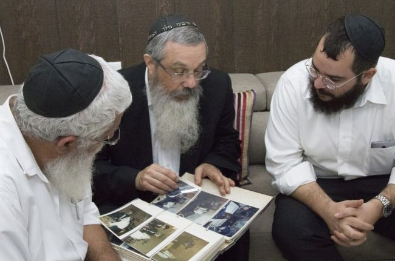

WE ARE BROTHERs
R’ Dovid Nachshon, director of Chabad Mobile Mitzvah Tanks and Tzivos Hashem in Eretz Yisroel, and R’ Avi Taub, CEO of Shefa Yamim, in a heartwarming farbrengen about their connection which began with a bracha from the Rebbe MH”M and continued with mysterious missions from the Rebbe, some of which remain a secret till this day.
By Oholiav Abutbul
Prepared for print by Menachem Aharonson

The Rebbe gave R’ Avi an additional dollar for tz’daka and said, “This is for Dovid. You meet him often.” How surprised R’ Avi was! The Rebbe had given him a dollar for R’ Dovid who had just passed by the Rebbe …
“The Rebbe himself underscored the bond between us. The Rebbe gave a dollar for one to give to the other because we often meet … He was hinting that we need to meet more.”
This sums up this article, the story of the bond between Chassidim as brothers, a relationship which, from beginning to end, has one theme running through it: the Rebbe. The Rebbe is the one who created the bond, the Rebbe is the one who encouraged it, and the Rebbe is the one on whose shlichus and for whose sake numerous projects were undertaken by the pair: Dovid Nachshon and Avi Taub.
When Beis Moshiach sat them down for a farbrengen, it was no chiddush. The soul connection between them and the many things they’ve done together have them meeting often. The big chiddush was only in that we enabled the two of them to sit and review their shared history from the beginning, and to go over numerous uplifting moments in the Rebbe’s presence. Generally, they get together to do something, not to reminisce, but this time they allowed themselves to sit and wax nostalgic. It was a rare encounter.
They sat in the Mobile Mitzvah Tank office in Natzrat Ilit, with dozens of dusty albums that document a small part of the missions the two were sent on, lying nearby. They began opening the albums and going back in time. We didn’t need more than one l’chaim for the memories to pour forth. For many hours the stories and experiences flowed, with every picture, date or name immediately drawing stories in its wake.
Even after many stories of their joint work have been publicized, there remains more unknown than known. Revelations, answers and unique expressions from the Rebbe were revealed, one after another, in this special encounter. Together, all parts of the puzzle comprise a clear picture, a picture of an outstanding soul bond between a pair of Chassidim, which is infused with the spirit of love, bittul and devotion to the Rebbe; a spiritual charge that flows between them in full-force till today.
THE BEGINNING: THE LOOK THAT BROUGHT R’ AVI TO THE REBBE
In order to set the stage for the pivotal moment in which the two of them met for the first time, we had to take a few steps back.
How did R’ Avi Taub, from a non-Lubavitch family, who had never heard of the Rebbe, get to 770 where he met R’ Dovid?
R’ Avi: I arrived in New York as an Israeli yored after the Yom Kippur War. During the war, I experienced horrors in which friends of mine were killed. These war experiences broke me, so that although before the war I had been educated with the values of the B’nei Akiva movement, after the war I dropped it all. You could say I was anti anything holy.
I arrived in New York on business. I ran a very successful business in Manhattan and nearby there was an Israeli restaurant called Maccabim. While eating there once, I met a Lubavitcher bachur who offered me to put on t’fillin. I declined. I did not feel connected to the idea of putting t’fillin on in the middle of the street. This scene repeated itself again and again.
One time, around the end of 5739, I asked the bachur to arrange a meeting for me with the Lubavitcher Rebbe. I decided that I wanted to discuss some things with him, to ask him some pointed questions about the war and about my friends who had been killed. These were questions that disturbed my peace of mind.
The bachur politely explained that you cannot meet the Rebbe so quickly, but he suggested that I wait for the Rebbe in the morning, around ten, when the Rebbe arrived from his house to 770 in those years, and see him then. I did just that.
I arrived at 770 in the morning and someone posted me in the lobby near the elevator opposite the main entrance. The door to 770 opened and I was standing facing the stairs, ready for the moment the Rebbe would enter. I saw the Rebbe’s car arrive and park opposite the entrance. Within seconds, all the bachurim in the area disappeared to the zal. I remained alone. The Rebbe got out of the car with a big bag and started to approach from afar.
The Rebbe looked at me and continued to approach, walking and looking, walking and looking. I felt in those seconds that all of my questions about the war and whatnot had disappeared. I did not dare to approach the Rebbe; I did not dare to open my mouth. I just wanted to bury myself, out of fear. The Rebbe came in, turned left to his office, and kept looking at me the entire time with a penetrating look. The Rebbe opened the door, stood at the threshold of his room and continued to look at me. After ten to fifteen seconds, he walked into his room and closed the door.
That’s it?
That’s it. I did not need more than that. It was all over in that moment. The bachurim came over to me and thought maybe the Rebbe had spoken to me. I just mumbled in my emotionally overwrought state, “What I saw here is not a man of flesh blood.” I don’t know what they thought of me … but that is what I grasped from those brief seconds.
R’ Dovid: The moment Avi saw the Rebbe, he was captivated, completely won over by the Rebbe with an absolute devotion that is impossible to explain. His adopting practical observance of Torah and mitzvos took time, taking several years. But from the first moment, he was ready to devote himself to the Rebbe.
POINT OF CONTACT: A NEW TANK BORN AT A FARBRENGEN
When was the first time you met?
R’ Avi: At that first encounter in 770, R’ Shimshon Halperin, today a shliach in Natzrat Ilit, grabbed hold of me and conversed with me, and then he invited me to spend Shabbos in 770.
I did not respond immediately but later accepted the invitation. I went to Crown Heights a few times for Shabbos and stayed by the mashpia, R’ Yitzchok Springer a”h. I attended t’fillos but did not attend the Rebbe’s farbrengens the first few times. The crowding and Yiddish put me off, and I preferred sleeping.
After a few Shabbasos, R’ Shimshon saw me before a farbrengen and he pushed me into the pyramids. He found a place for me and sat me down there. By divine providence, it was next to Dovid Nachshon.
R’ Dovid: I was a young married man at the time and was staying in 770 because of my work for the Mobile Tanks in Eretz Yisroel. Before the farbrengen, Shimshon came over to me and said that someone from mivtzaim was coming and he asked me to help out, so he would feel comfortable.
R’ Avi: We got acquainted. Dovid told me his name and what he does. The minute I heard he was involved with the tanks, I was excited. By divine providence, the previous Friday, when I arrived in Crown Heights, I encountered a tank that had returned from mivtzaim and was in front of 770. I went inside and got an explanation of what it was about and the idea really impressed me.
Dovid spoke about his work. He said that he was fundraising to buy a new tank. As for me, I heard this and, once again – I was excited.
R’ Dovid: As we spoke, the Rebbe walked in. We got up and after the Rebbe sat down, we sat. The Rebbe began speaking and I could sense that Avi’s face was on fire. He suddenly turned to me and said: I’m giving a tank. I motioned to him that we cannot speak now as the Rebbe is talking.
I waited till the end of the sicha and then managed to get hold of some l’chaim for us and I raised my cup to the Rebbe and said to him: Avi, say l’chaim and have in mind to tell the Rebbe what you just told me.
I will never forget that incredible moment. We had just raised our cups and immediately, boom! The Rebbe turned to us and answered, “l’chaim v’livracha.” Right away! The Rebbe immediately accepted Avi’s good hachlata.
R’ Avi: R’ Shimshon, who sent me there knew nothing. He did not think I was looking to donate. That I sat precisely there, among all the thousands of people, that was only because the Rebbe wanted to connect me to Dovid.
R’ Dovid: Without a doubt, the Rebbe connected us.
And what happened after the farbrengen? How did the relationship continue?
R’ Dovid: Here we come to a special miracle of the Rebbe.
On Motzaei Shabbos I said to Avi, come, let’s write to the Rebbe. I wanted this to obligate him to follow through on his decision.
(Parenthetically: At that time, I had a lot of aggravation from people who made promises but didn’t keep them. The Rebbe told me in yechidus, “You run around a lot. Don’t you know that here in America people make promises and then renege on them? This is commonplace in America. There is nothing to get excited about.”
Someone gave me a check for $10,000 which wasn’t covered. In the report to the Rebbe that I wrote about the check, and that in the end no tank resulted, the Rebbe wrote, “Many thanks, many thanks.” Only afterward did I realize that the response wasn’t about that particular person; the Rebbe was referring to the tank. And actually, two big donors came forward at that time and Avi was one of them.)
I sat with Avi and began explaining what to write to the Rebbe. I told him to write about his resolution and then I asked him: Do you have any problems. First he said no, but I persisted and said everyone has problems. Then Avi opened up and said that he has one daughter and the doctors did not hold out any hope for another child. We wrote to the Rebbe about this.
We wrote the letter in Iyar and there was no response. Some months went by in which I met Avi a few more times and got a check from him for a new tank, but the strong connection between us had not been forged yet.
In the meantime, I wrote to the Rebbe about something else in connection with the tanks. We had gotten an offer to buy a restaurant in Teveria and to appoint one of our people to manage it; all the profit would go to the tanks. Things had started coming together and then, on 24 Av, a letter arrived from the Rebbe, written on 14 Av, with a handwritten addition which said not to get involved in businesses (especially kashrus).
In that letter was enclosed a second letter, for Avi. There were times that the Rebbe would do this, i.e., include a letter for someone else, for the purpose of connecting the recipient of the letter with the person who gave it to him.
The Rebbe had postponed this letter for several months and at the beginning he wrote, “Having received your letter … from back then” and at the end, “The merit of your tz’daka to spread Judaism, especially in the Holy Land, with a tank etc., and surely you will continue and add to this, will stand by you in all needed things.”
As I mentioned, the letter was written on 14 Av and arrived on the 24th. These two dates are precise: 14 Av is the day that it says in the daily Tanya (in a leap year, as it was that year) - “and this is also the reason why tz’daka is called shalom … especially the tz’daka of Eretz Yisroel which is literally the tz’daka of Hashem… and this will stand by us to redeem the lives of our souls.”
And 24 Av is the day, exactly one year later, that Avi’s wife gave birth to a girl! A girl who was born with the Rebbe’s bracha, in the merit of tz’daka for the tanks, and her birth paved the way for the ones that followed.
THE FIRST ASSIGNMENT: DRAFTING KNESSET MEMBERS
What was the first shlichus that the Rebbe sent you both on?
R’ Avi: The first shlichus we did together was for Mihu Yehudi. We went around the Knesset building a lot, going from one Knesset member to another.
R’ Dovid: We cannot say much about that assignment. It was work that the Rebbe knew about and he regularly received reports. I would write to the Rebbe every day. It was a targeted approach that applied to a certain type of person, and is not something that we can speak about.
We did this together, as a pair. We went everywhere together. Avi poured vast amounts of money into this (pointing at Avi). He doesn’t like when I say this, but his dedication from the get-go was without any financial restraint for the tanks and for many other things that we did for the Rebbe.
R’ Avi: (dismissively) Is it my money? It’s all the Rebbe’s money.
THE REBBE ASKED ME ABOUT HIM AND HIM ABOUT ME
R’ Dovid and R’ Avi have many other examples to illustrate the special regard they were shown by the Rebbe as two friends bound intricately together.
Can you tell us about things the Rebbe said or did to deepen the connection between the two of you?
R’ Dovid: One of the first times that we went to see the Rebbe together was in 5742, in a general yechidus in the small zal. This was before the yechidus klalis moved to the big zal. We stood there and I introduced Avi to the Rebbe (in Yiddish), “This is Avi Taub.”
He had already been to the Rebbe before and we had even been together for a yechidus klalis in Gan Eden HaElyon (the yechidus room). This was after he had donated a tank, but there wasn’t yet a strong connection between us.
When I introduced him to the Rebbe, Avi did not dare say anything to the Rebbe. The Rebbe smiled and blessed, “Much success and everything good.” It was already apparent that the Rebbe was relating to him in a special way.
After that, there were many times that the Rebbe connected the two of us and spoke with one about the other. In general, nearly every time I passed by the Rebbe without Avi, the Rebbe asked about him. When he passed by the Rebbe without me, the Rebbe asked about me.
The Rebbe always used my name “Dovid,” or “Avi” for him, or “Avrohom.” Sometimes “Taub” too. That the Rebbe used the first name and not, as was usual, the last name, is itself a sign of affection. And for Avi, it was even more so, for the Rebbe used his nickname, “Avi,” and not his full name.
One time, I even went by for dollars with Avi’s wife. She needed an operation but the Rebbe had not responded. We were anxious and wanted a bracha from the Rebbe. We passed by for dollars on Lag B’Omer, after the Rebbe returned from the Ohel.
R’ Avi: The Rebbe gave three dollars: one - “bracha v’hatzlacha,” two – to put in a pushka before the operation, three – after the surgery.
R’ Dovid: I asked R’ Leibel [Groner] not to stop me, so I could ask for a bracha, because distributions like that were quick. The Rebbe did not speak to anyone. That encounter was quite the exception.
The truth is, we had quite a few exceptions like that in which the Rebbe asked about you – Avi – when I went by for dollars after the Ohel. For you, the Rebbe was willing to make exceptions.
I remember another interesting time when I felt that the Rebbe was giving us special attention. Generally, the Rebbe gave out coins to Tzivos Hashem at the end of a rally, via the counselors. All the counselors got packages of dimes to give out to the children. On Chanuka 5743, I went to a rally and stood on the side because it wasn’t meant for me [but for children]. Suddenly, the Rebbe announced the distribution of coins for tz’daka for the children by the Tankistin! This time too, the Rebbe asked whether Avi was there.
R’ Avi: Although I was in Manhattan at the time and couldn’t possibly have given it to the children, as I remember it, the Rebbe sent a pack of dimes with Dovid, for me.
R’ Dovid: Avi’s beard also began with encouragement from the Rebbe. You can see in the pictures from Russia that Avi doesn’t have a beard, even though he was already very involved.
Then came Shavuos 5749. I was at the Rebbe. Avi wasn’t there. That Shavuos, R’ Berel Weiss was at the Rebbe. He had started growing a beard and the Rebbe spoke about beards at the farbrengen. I assumed the Rebbe was also referring to Avi.
On Motzaei Shabbos and Yom Tov, I called Avi and said to him, “I have regards for you. It seems the Rebbe wants you to grow a beard.” And Avi, with kabbalas ol, accepted this. R’ Avi: It was Shavuos and I had a s’fira beard. I kept it, till today.
SECRET MISSIONS
The activities most associated with the pair, R’ Dovid and R’ Avi, are without a doubt the series of secret missions to Russia during the period when the Iron Curtain still stood, in which they rebuilt the gravesites of the Rebbeim. It seems that aside for rebuilding the gravesites, much of which has already been publicized, the trusted emissaries were entrusted with a longer list of assignments. Obviously, these missions were accompanied by many answers and much encouragement from the Rebbe.
R’ Dovid: It began in 1987, when Avi was approached with an offer to expand his diamond and jewelry business into the Soviet Union.
R’ Avi: The truth is that I was not too excited about the offer. I had offices in New York, London, and Antwerp and was hardly looking for adventure in Russia.
R’ Dovid: I told Avi, this is not something to decide on your own. The Rebbe must be consulted. So we wrote to the Rebbe that there was an offer for Avi to travel to Russia on business. I also wrote that it did not involve me, since I do not work with Avi in his business, and therefore the plan would be that if he traveled he would do so on his own.
The Rebbe circled the words “to look into this,” meaning the trip; and regarding what I had written that I could not travel, the Rebbe wrote “together with him,” meaning that I also have to travel.
R’ Avi: As far as the actual traveling, the Rebbe wrote “as he wishes,” meaning that the Rebbe knew that I did not want to go, and he left it up to me to decide. Be that as it may, the moment I realized that this was what was wanted, I was in and we began to follow up on it.
R’ Dovid: For the purpose of legitimacy, we printed cards that listed me as the “vice president” of the company so that I could join the trip. That is when the whole lengthy process of obtaining a visa began. We made contact with the diamond organization by the name of Russ Almaz, whose workers were all connected, to one degree or another, with the KGB, and we tried to interest them in our business in order to get a visa. However, the group gave us the run around and had no interest in certifying us, since they already had enough outside investors in that area.
It was complicated by the fact that we have Israeli passports, and there were no diplomatic relations at the time between the two countries. Except for avowed communists and the occasional sports team and the like, it was rare for a holder of an Israeli passport to be allowed to enter Russia.
Some time later we received an offer from someone who had connections with one of the embassies, who was prepared to issue us foreign passports of that country, including birth certificates and exit stamps from that country! We asked the Rebbe and did not receive the go ahead, so we dropped that. Later we discovered that by listening to the Rebbe we were saved from serious consequences. The Russians were looking into us as they suspected us of being operatives of the Mossad. If we would have tried to pull off such a maneuver, of using a false foreign passport, they might have progressed from suspicion to action, and then it is uncertain whether we would be here today talking to you…
In brief, the whole thing stalled for half a year. Throughout that half a year, the Rebbe blessed us repeatedly whenever we passed him by, “Much success in Antwerp.” What was there in Antwerp? Avi did have an office in Antwerp, but I certainly had nothing going on there, so apparently that was not what the Rebbe meant. Obviously, he was referring to traveling to Russia, but it was out of the question to have anyone listening in know about it, so the Rebbe said Antwerp instead.
I wrote to the Rebbe that the matter was stuck, and the Rebbe answered that apparently we did not have the necessary information, and that we should research the matter with those who were knowledgeable and expert in the matter.
We went to a religious diamond dealer who also had dealings with Russia, and when he heard that we wanted to get visas as diamond merchants, he immediately told us that we had no chance. “They have no shortage of dealers in the field,” he told us. However, when he heard that we were also in the jewelry business, he right away told us that that was the way to go. Jewelry in Russia was of very low quality, and they would be very happy to have experts come to help them develop the field professionally. So that is what we did. We went from the diamond concern to the jewelry company, “Jobleer Almaz,” which was also affiliated with the KGB, and in the end we got a permit from them.
Were there reactions from the Rebbe regarding the trips to Russia?
Absolutely! From that point on, starting with Shabbos HaGadol 5747, every time that we attended a farbrengen, the Rebbe instructed us to say l’chaim on a large cup. In the beginning it was through hand motions, and later it was enough to just give a sign with his eyes.
Every single time that we traveled there, we would first come to the Rebbe, even if only for a short visit.
Each place that we wanted to visit, we were required to receive a permit in advance. That is where we were in doubt as to how to proceed, whether to ask for permits to other places outside of Moscow, since as business people we had no reason to go anywhere else. The Rebbe answered: When in doubt, stay put and take no action.
Later, when we were there already and had received real business offers, we wrote to the Rebbe asking whether it was possible to ask for permits for additional places. We wrote that we could justify the requests by saying that we wanted to visit the graves of our grandfathers. The Rebbe made an arrow to what we had written about how to excuse it, and gave us the go-ahead.
R’ Avi: That is how the Tzemach Tzedek became my grandfather and the Rebbe Rashab became his grandfather…
R’ Dovid: Somebody who is in the know once told me that the Rebbe had asked for one (or more) of the albums that we had brought to the Rebbe of our activities in Russia, before he went to the Ohel. The Rebbe took the album, removed all of the pictures and took them to the Ohel.
The special appreciation that the Rebbe had for our shlichus in Russia was expressed also in connection with the first Kinus HaShluchim in Russia on 25 Adar 5750/1990. This was during the period referred to as “perestroika” or “glasnost.” R’ Moshe Slonim, who organized the Kinus, pressured us a great deal to attend, but we had a plan to travel there after Pesach, in connection with the maintenance of the Ohels, so our thought was not to attend. I wrote to the Rebbe about the idea, and I wrote that if it was necessary for us to attend the Kinus, maybe it was worthwhile for us to stay for Pesach in Russia. We had an offer to go to Odessa, where there were thousands of Jews awaiting us.
The Rebbe agreed to the suggestion about the Kinus HaShluchim and instructed us to attend, but as far as Pesach, the Rebbe wrote, “It is the custom of B’nei Yisroel that on Pesach one needs to be in the place of his permanent dwelling.” The Rebbe sent us back home, so we ended up making a special trip for the Kinus, and then traveling again after Pesach.
UNUSUAL SIGNS OF CLOSENESS
The special and unique sign of closeness that the two merited was the surprise yechidus, following the construction of the Ohel for the Rebbe’s father, R’ Levi Yitzchok, in Alma Ata.
R’ Avi: It was on 6 Tishrei 5750. We were already inside the taxi to head to the airport, when suddenly, R’ Chanina Sperlin came and called us back. The Rebbe had requested, “If they are here, I want them to come in and give it over [the key to the Ohel in Alma Ata].”
We went into yechidus, and we saw that when the Rebbe spoke about the Ohel of his father, he choked up and became red. It took a few seconds for him to actually speak. The Rebbe gave each of us lekach and a dollar to give for tz’daka in the Holy Land. The story of that yechidus has already been published, and we will not go on at length about it here.
What is really stunning is – think about it – in such situations, the Rebbe generally was interested in hearing an exact accounting of all the expenses involved, and he would insist on covering the costs himself. Just recently it became public about how someone was involved in the headstone of the Rebbe’s father, and the Rebbe insisted on paying in full. And here, despite that the whole project cost a huge amount of money, the Rebbe did not ask to pay for his father’s Ohel. We saw this as something extremely positive. In effect the Rebbe was saying that my money does not belong to me; it is all his.
R’ Dovid wished to conclude the farbrengen with the story of the shlichus that, to him, is the ultimate; the well-known shlichus to read the p’sak din about the revelation of the Rebbe as Moshiach at the gravesites of all the Rebbeim, as emissaries of the Chabad rabbis around the world.
“It is true that this mission has already become public knowledge, and that is why this is not the place to repeat it,” says R’ Dovid, “but it is essential to read about it over and over again. It is clear to me that every Lubavitch child needs to grow up with these stories, and to see the amazing way that the Rebbe related to matters connected with the revelation of Moshiach. With all due respect to stories of all that was done and accomplished over the years, we need to remember that this is all only a step towards the ultimate goal, ‘kabbalas p’nei Moshiach b’poel mamash.’”
Beis Moshiach (staff). "WE ARE BROTHERs." Beis Moshiach, no. 1091 (October 31, 2017).